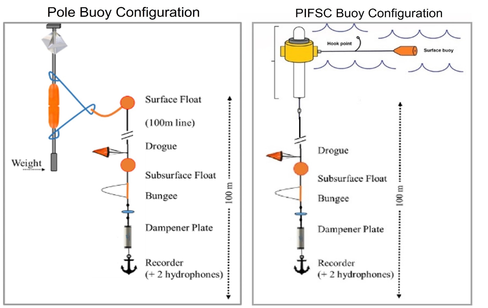

Equipment
Buoys
Two types of buoys were used for CalCurCEAS, a pole buoy and a spar buoy (designed and built by Pacific Island Fisheries Science Center (PIFSC)). The reason behind using both buoy types was to test how the PIFSC buoy fared in the California Current. Historically the radar reflectors on the pole buoys acted as sails, and caused the drift rate of that buoy to be faster than expected. Each buoy type used different GPS units for tracking and a different weighted anchor, although the rest of the sub-surface gear was the same.

Pole Buoy
The pole buoy was built using an 8 to 12 foot aluminum pole with 10 pounds of lead weight secured at the base for stability. Two crab floats were attached at the center to maintain an upright position in the water. A radar reflector was mounted near the top to improve visibility on the ship’s radar system in poor conditions. A SmartOne Solar GPS unit was affixed to a custom aluminum mount at the top, enabling reliable tracking. Finally, a rope bridle was attached above and below the crab floats and allowed easy connection between the buoy and the array.
PIFSC Buoy
The PIFSC buoy featured a watertight PVC spar as its main body, with a clamshell floating collar bolted together at the top. A watertight headpiece, secured by a threaded locking collar, housed a 3D-printed mount for two Spot GPS units and their corresponding battery packs. To ensure stability in the water column, 10lbs of lead weight was bolted to the bottom of the PVC body. Extending approximately 1m from the base was a spar whip, serving as the attachment point for the rest of the array.
Array
A 100m long array was attached to both buoy configurations, with the only difference being the addition of a surface buoy in the pole buoy setup. This provided buoyancy for the array, as it was not directly supported by the pole. Aside from this distinction, the arrays were identical. Each consisted of approximately 100m of crab line with a subsurface buoy attached. Below the subsurface buoy was a drogue, an in-line bungee, and a dampener plate. The hydrophone array, positioned beneath these components, included a SoundTrap 640 recorder and two HTI hydrophones spaced 5 meters apart.
Anchor
River anchors were secured to the bottom of each array, with the required weight depending on the buoy type. A 30 lb anchor was used for pole buoy deployments, while a 40 lb anchor was necessary for PIFSC buoy setups.
Additional Information
More information about the drifting acoustic recorder components and design can be found on our Adrift Field Methods website.